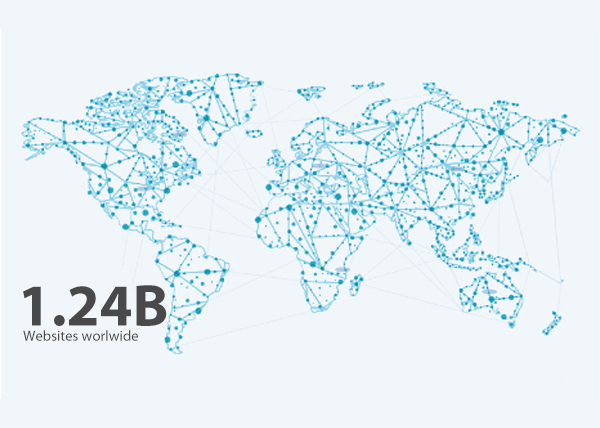

Lịch sử phát triển của website
1. Lịch sử ra đời
Web đã được thông báo công khai (thông qua một bài đăng trên nhóm tin Usenet alt.hypertext) vào ngày 6 tháng 8 năm 1991 để mọi người có thể tải và tìm hiểu nó. Cũng bắt đầu từ hôm ấy công nghệ web được thế giới biết đến.
Jeff Groff, người cùng tham gia viết mã với Berners-Lee, cho biết ý tưởng tạo dựng web thực ra được hình thành rất đơn giản: "Chúng tôi luôn nghĩ rằng người sử dụng không cần phải xoay sở với những vấn đề kỹ thuật phức tạp". Web giống như một tấm khăn trải giường với nhiệm vụ cố che phủ sự rắc rối của những dữ liệu được lưu hành trên Internet.
Dự án www chỉ thực sự thăng hoa khi chuyên gia Marc Andreessen thuộc Đại học Illinois (Mỹ) giới thiệu trình duyệt web máy tính đầu tiên vào tháng 4/1993. Trình duyệt Mosaic đã quá thành công và một số tính năng vẫn được coi là quy ước trong công nghệ web ngày nay.

2. Lịch sử phát triển
1991
CERN + HTML
CERN - Sự Khởi đầu
Ngày 6/8/1991, Time Berners – Lee, chuyên gia phần mềm của Tổ chức Nghiên cứu Nguyên tử châu Âu (CERN) đã cho ra mắt trang Web đầu tiên trên thế giới có tên miền là info.cern.ch, được xem là tiền đề mở ra tương lai của Internet. Trang Web được miêu tả là “một sáng kiến tìm kiếm thông tin siêu văn bản đa phương tiện trên diện rộng”.
HTML - Ngôn ngữ đánh dấu siêu văn bản
Trong những ngày đầu thiết kế trang web, thì HTML là ngôn ngữ duy nhất để thể hiện mọi thứ.
1993
ALIweB + Landing Page
ALIweB - Sự ra đời của trang web tìm kiếm
Chỉ 2 năm sau khi World Wide Web ra mắt, chúng tôi đã được giới thiệu về ALIweB! ALIweB (Archie Like Indexing for WEB) được coi là công cụ tìm kiếm Web đầu tiên. Họ đã mở cửa kinh doanh vào tháng 11 năm 1993 cung cấp cho người dùng các liên kết hữu ích đến nội dung tốt nhất của web. Chỉ trong 2 năm, bạn bắt đầu thấy thiết kế đang đi vào cuộc sống như thế nào.
MTV - Landing Page
MTV Ra mắt trang web của mình vào năm 1993. MTV là người đầu tiên sử dụng Landing Page
Đến cuối năm 1993, có 623 trang web, theo một nghiên cứu của nhà nghiên cứu MIT Matthew Gray. Internet đã cất cánh và thiết kế cũng vậy.
1994
Hotwire + JavaScript
Hotwire - Sử dụng quảng cáo để thêm vào thiết kế.
Hotwire, hiện được gọi là Wired, đã làm rất tốt khi thêm quảng cáo biểu ngữ đầu tiên trên thế giới vào tiêu đề trang web của họ vào năm 1994.
JavaScript - Giải phóng sức mạnh
Tương lai của web đã được định hình nhanh chóng! JavaScript đã giúp các nhà thiết kế khắc phục những hạn chế của HTML tĩnh bằng cách cho phép họ đưa một số chuyển động lên web.
Đến giữa năm 1994, có 2738 trang web, theo thống kê của Gray; và đến cuối năm, hơn 10.000.
1996
CNN + Flash
CNN - Trang web mang tính biểu tượng
Năm 1996 của CNN được xem xét là một trang web mang tính biểu tượng. Sử dụng văn bản, hình ảnh và quảng cáo, CNN giới thiệu một thiết kế trang web cân bằng với khả năng sử dụng tuyệt vời cho giữa 90.
Flash - Thời đại hoàng kim của hoạt hình web
Flash đã thay đổi cảnh quan của thiết kế trang web. Lần đầu tiên các nhà thiết kế có thể tạo ra bất kỳ hình dạng nào, thêm hoạt hình và phát triển các trang web hấp dẫn hơn bao giờ hết bằng cách sử dụng một công cụ duy nhất.
Người dùng Internet đã tăng hơn gấp đôi trong năm 1996 lên 36 triệu người dùng trên toàn thế giới, số lượng website tăng từ 25.300 đến 257.601.
1998
Google + CSS
Google - Ông vua tìm kiếm ra đời
Internet vào năm 1998 bắt đầu trông giống một chút so với internet mà chúng ta thấy ngày nay. Google Beta đã ra mắt vào ngày 4 tháng 9 năm 1998. So sánh thiết kế này với công cụ tìm kiếm trước đó ALIweB. Thay vì chọn một trang chứa đầy liên kết, Google đã chọn con đường tối giản.
CSS - A More Flexible Way to Create
Ngay sau khi tạo ra Flash, CSS đã xuất hiện. Khi ngày càng có nhiều người dùng trực tuyến, tốc độ đã trở thành một vấn đề lớn. Ý nghĩ đằng sau CSS rất đơn giản. Nội dung và trình bày riêng biệt. Nội dung của trang web là HTML và phong cách của trang web sẽ được mã hóa bằng CSS.
2003
Wordpress
Wordpress - Let's Blog About It
Wordpress , hiện là hệ thống quản lý nội dung (CMS) hàng đầu thế giới, đã được ra mắt vào năm 2003. Wordpress được ước tính đã được cài đặt trên khoảng 2.000 blog tính đến tháng 5 năm 2003. Tính đến tháng 1 năm 2015, hơn 23,3% trong số 10 triệu đầu trang các trang web hiện sử dụng WordPress.
2006
Facebook + Thời đại di động
Facebook - Công khai
Facebook ban đầu được ra mắt vào năm 2004, nó chỉ dành riêng cho sinh viên đại học và bạn phải có địa chỉ email .EDU để có quyền truy cập. Năm 2006, Facebook đã công khai và thay đổi phương tiện truyền thông xã hội và cách công chúng sử dụng Internet cùng nhau.
The Mobile Era - Thời đại di động
Thiết bị di động và điện thoại thông minh đã thay đổi cách mọi người sử dụng và suy nghĩ về web. Trong năm 2006, hầu hết các trang web không "thân thiện với thiết bị di động" theo bất kỳ tiêu chuẩn nào. Hơn nữa, sử dụng web trên thiết bị di động thường gây khó chịu. Điều này buộc các nhà thiết kế web phải tạo ra một cách tiếp cận tốt hơn cho thiết kế web di động.
2007
IPhone
IPhone - Cuộc cách mạng di động SmartPhone
Mặc dù Apple không phát minh ra SmartPhone, nhưng vào ngày 29 tháng 6 năm 2007, chiếc iPhone đầu tiên được phát hành đã mở ra một kỷ nguyên mới của thiết kế web.
2009
Flickr + Responsive
Flickr - Images Get Social
Facebook ban đầu được ra mắt vào năm 2004, nó chỉ dành riêng cho sinh viên đại học và bạn phải có địa chỉ email .EDU để có quyền truy cập. Năm 2006, Facebook đã công khai và thay đổi phương tiện truyền thông xã hội và cách công chúng sử dụng Internet cùng nhau.
Responsive - Hiển thị tốt nội dung trên mọi thiết bị
Vào năm 2010, một nhà thiết kế web tài giỏi và có định hướng tên là Ethan Marcotte đã thách thức cách thiết kế trang web di động đang được tiếp cận. Đây là sự ra đời của Responsive
2014
Hubspot
Hubspot - Sự trỗi dậy của Inbound
Inbound đã ra đời. Phần mềm của Hubspot đã giúp hàng ngàn công ty trên toàn thế giới. Thiết kế tương tác và CTA trên màn hình đầu tiên đã được thử nghiệm và chứng minh.
To day
Web
Có hơn 1,24 tỷ website trên toàn thế giới.
